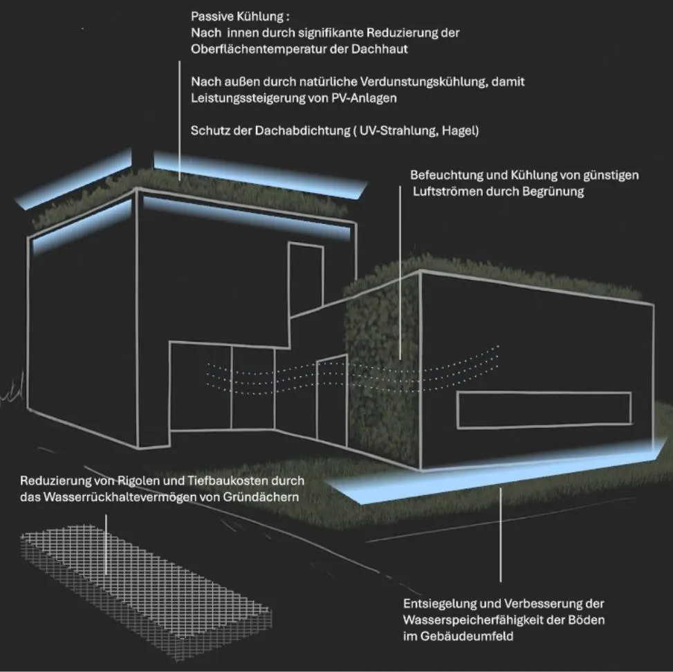
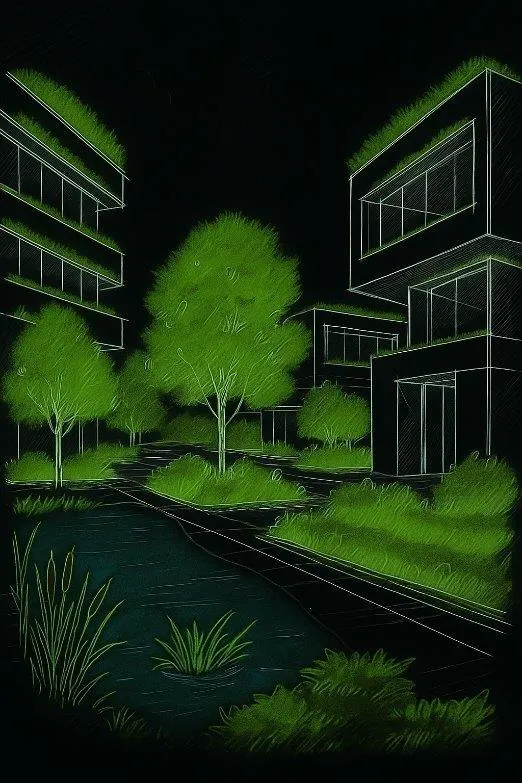
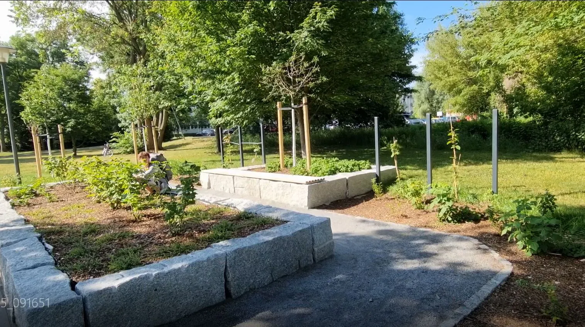

Städte, die Niederschläge aufnehmen, speichern und zeitversetzt wieder abgeben. Blau-grüne Infrastruktur als Antwort auf Starkregen, Dürre und Hitzeinseln.
Immer häufigere Starkregen, immer längere Trockenphasen, überhitzte Innenstädte — unsere klassische Stadt-Infrastruktur ist dafür nicht gebaut. Die Schwammstadt kehrt das Prinzip um: Wasser wird nicht möglichst schnell in die Kanalisation abgeleitet, sondern vor Ort zurückgehalten, gespeichert und zeitversetzt wieder freigegeben.
Dezentrale Rückhaltung in Gründächern, begrünten Fassaden, entsiegelten Flächen und versickerungsfähigen Belägen. Kanalisation und Rigolen werden entlastet, gleichzeitig speist das Wasser die Verdunstung, kühlt das Stadtklima und versorgt die Vegetation auch in Trockenphasen.


Wir begleiten Gemeinden von der ersten Konzept-Skizze über Pilotflächen bis zum kommunalen Standard. Mit der Erfahrung aus eigenen Bauprojekten — und mit dem technischen Rückgrat von SECALFLOR.
Von der Pilotfläche bis zum kommunalen Standard — wir begleiten Sie.